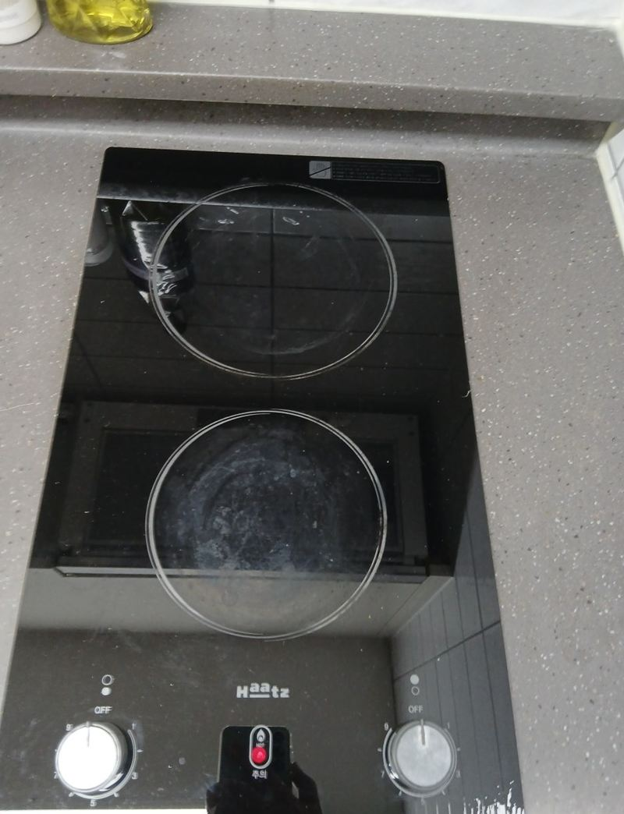
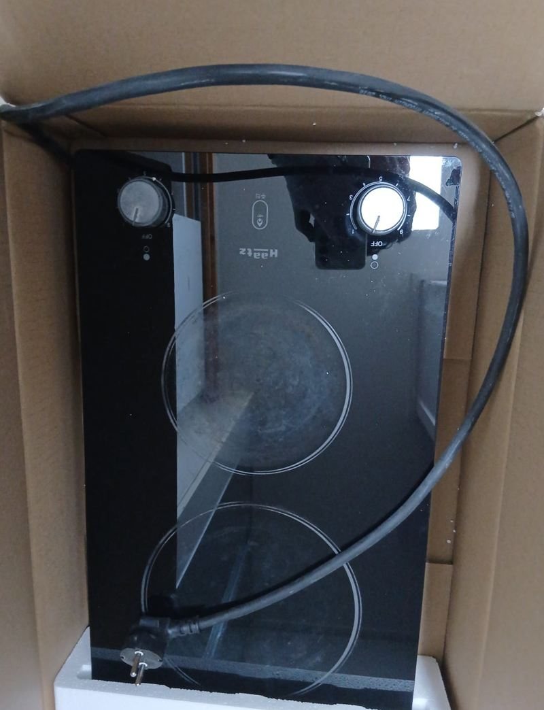
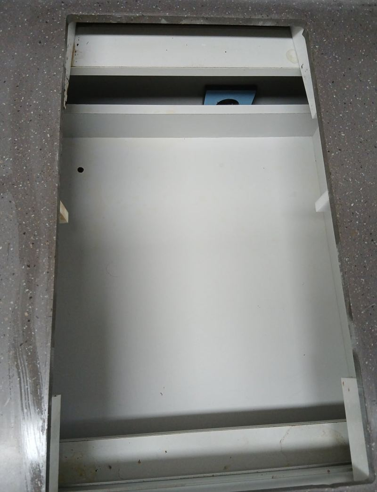
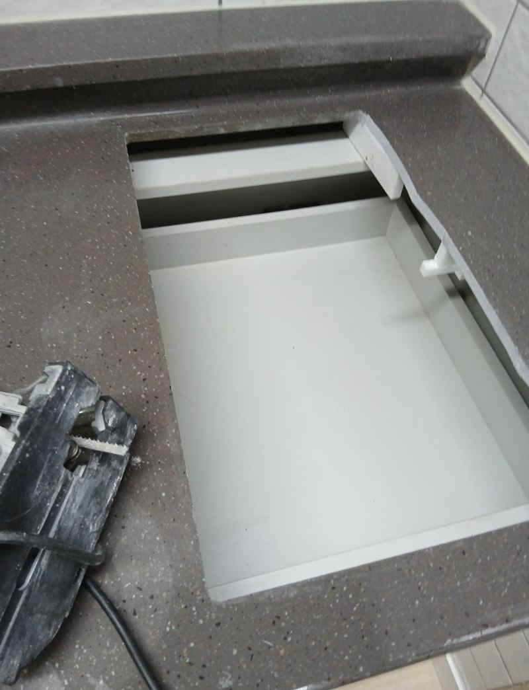
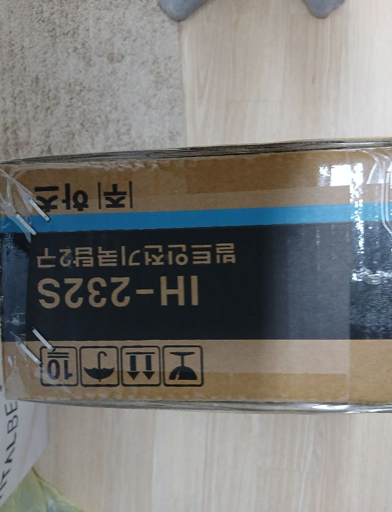
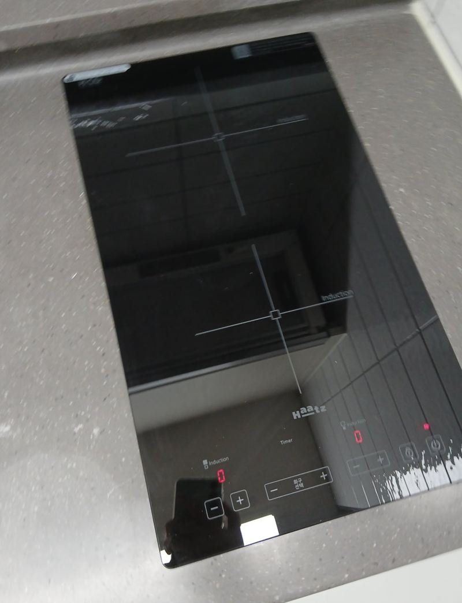

남양주 2구 인덕션 설치 교체 비용과 순서
← 밀어서 전후 비교 →
"다이얼을 돌려 쓰다 보니 불빛만 보고 켜졌는지 알아야 해서 늘 불안했어요." 오피스텔에 처음부터 달려 있던 2구 하이라이트를 터치식 인덕션으로 바꾸고 싶다는 문의였어요. 그런데 새 인덕션이 기존 구멍보다 커서, 상판 대리석을 조금 더 넓혀야 했어요.
| 현장 | 남양주 가운동 오피스텔 주방 |
|---|---|
| 바람 | 다이얼식 하이라이트를 터치식 인덕션으로 |
| 걸림돌 | 구멍이 새 제품보다 작고, 아래에 상판 지지대 |
| 한 일 | 철거 → 기름때 제거 → 지지대 살린 추가 타공 → 설치·작동 확인 |
구멍이 작을 때 확인한 것
인덕션은 같은 2구라도 모델마다 들어가는 구멍 크기가 조금씩 달라요. 이 집은 구멍이 새 제품보다 작았고, 대리석 아래에 상판을 받치는 지지대가 지나가고 있었어요. 지지대를 함부로 자르면 상판이 처질 수 있어서, 지지대는 살리고 필요한 만큼만 넓히는 방법을 먼저 설명드렸어요.


떼어 낸 김에 기름때부터
오래 쓴 하이라이트 둘레에는 기름때와 찌꺼기가 눌어붙어 있어요. 이걸 남긴 채 새 제품을 얹으면 테두리가 들뜨고, 열이 고르게 빠지지 않아 제품 수명에도 좋지 않아요. 새 인덕션을 놓기 전에 상판을 깨끗이 닦아 냈어요.

지지대를 살리며 추가 타공
전용 장비로 표시선을 따라 대리석을 조금씩 잘라 넓혔어요. 지지대가 있는 쪽은 최대한 남겨 두고 꼭 필요한 만큼만 깎았어요. 장비 없이 무리하게 자르면 대리석이 깨져 상판을 통째로 바꿔야 할 수도 있어요.


설치와 작동 확인
새 인덕션을 구멍에 앉히고 전원선을 연결한 뒤, 두 화구가 모두 켜지는지, 터치 화면이 잘 반응하는지, 과열 보호 기능이 작동하는지 하나씩 확인했어요. 둘레 실리콘을 정리하고 뗀 하이라이트는 수거했어요.

2구 인덕션 교체 비용이 달라지는 지점
| 조건 | 영향 |
|---|---|
| 구멍 크기가 맞음 | 철거·설치만으로 끝나 간단해요 |
| 구멍을 넓혀야 함 | 대리석 추가 타공이 더해져요 |
| 구멍이 너무 큼 | 남는 틈을 막는 마감이 필요해요 |
| 전원 용량 부족 | 콘센트·차단기 확인이 필요해요 |
인덕션 교체 질문
오피스텔도 인덕션으로 바꿔도 되나요?
대부분 가능해요. 관리 규정이나 전기 용량이 걸리는 건물이 있어서 미리 확인해 주세요.
쓰던 냄비를 그대로 쓸 수 있나요?
인덕션은 바닥에 자석이 붙는 냄비만 데워져요. 쓰시던 냄비를 미리 확인해 보세요.
설치 시간은 얼마나 걸리나요?
구멍이 맞으면 짧게 끝나고, 타공이 필요하면 그만큼 더 걸려요. 사진을 보고 미리 말씀드려요.
하이라이트와 인덕션, 뭐가 다른가요?
하이라이트는 상판 유리 자체가 뜨거워져서 데우고, 인덕션은 냄비 바닥을 직접 데워 더 빨리 끓고 상판이 덜 뜨거워요.
3구로 바꿀 수도 있나요?
상판 폭과 하부장 구조, 전기 용량이 맞으면 가능해요. 구멍을 크게 넓혀야 할 수 있어요.
터치식은 물이 묻으면 오작동하지 않나요?
물이 많이 고이면 잠금이 걸리는 제품이 있어요. 행주로 닦아 주시면 다시 정상 작동해요.
떼어 낸 하이라이트는 어떻게 하나요?
이 집은 떼어 낸 하이라이트를 그날 바로 가져갔어요.
인덕션 전용 콘센트가 꼭 필요한가요?
제품마다 필요한 전기 용량이 달라요. 기존 하이라이트가 쓰던 전원을 그대로 쓸 수 있는지 모델을 보고 확인해요.
다른 인덕션·하이라이트 현장
지금 쓰는 쿡탑 사진과 새로 달 인덕션 모델명을 알려주세요.
전화 상담 010-4517-9872